Style Nursing++
背景
- 任务背景： 零样本复合天气迁移需要在一张真实交通图像中同时表达多个提示概念，例如“雪 + 日落”“雨 + 彩虹”或“雾 + 闪电”。这些概念的作用范围并不相同：雪可能覆盖整幅图，日落主要改变天空和照明，积水与反射则应出现在道路区域。
- 核心要求： 编辑结果既要完整响应提示词，又要保持源图的道路几何、车辆身份、建筑布局和场景语义。只强化风格会破坏结构，只加强源图约束又容易让部分概念消失。
- 方法定位： Style Nursing++ 是一个零样本扩散编辑框架。它用自适应概念强化解决提示词表达不足，用分层空间与语义引导保护结构，并以 Learned Structural Kernel（LSK）替代昂贵的语义参考分支，在保持编辑质量的同时降低推理成本。
问题：Style Neglection 与 Style Over-expression
复合提示中的不同概念具有不同的空间支持和出现时机。标准文本引导编辑器通常出现两类相互耦合的失败：
- Style Neglection（风格忽略）： 一个或多个概念没有得到充分表达。例如模型生成了雪，却几乎没有呈现日落；整体结构接近源图，但提示词完成度不足。
- Style Over-expression（风格过表达）： 提高文本或风格引导后，天气外观变强，却同时改写车辆、道路、建筑或前景物体，造成结构漂移和语义错误。
- 空间错配： 把所有概念都在整幅图上统一加强，会让天空现象泄漏到道路和车辆，也会让路面效果污染背景。
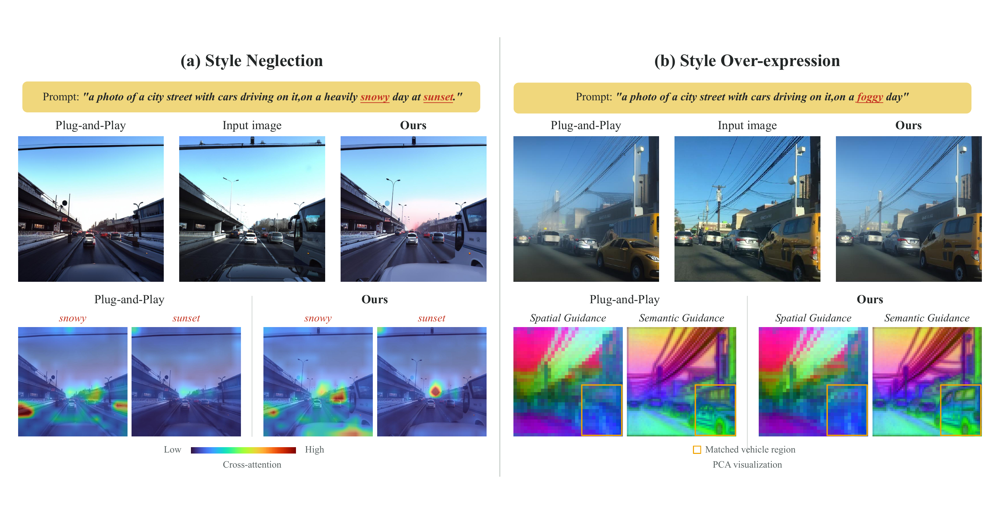
Style Nursing++ 将问题转化为两个互补目标：对尚未满足的概念进行按需、分区强化；对源图结构进行分层、选择性保护。
Insight
- 风格概念需要被独立、充分地表达。 Cross-attention 反映文本风格概念与图像区域之间的对应关系。通过监测每个风格概念的 cross-attention 响应，并仅强化表达不足的概念，可以避免复合风格中的 Style Neglection，同时减少已经充分表达的概念被过度增强。
- 结构信息分布在网络的不同层级，需要进行分层保护。 扩散模型不同层承载不同尺度的结构信息：中间层主要描述场景布局和局部几何，自注意力进一步表示物体内部及物体之间的语义关系。因此，结构保护不应统一作用于所有层，而应在合适层级分别约束空间结构和语义关系。
- Self-attention 中需要的结构模式可以由可学习的核函数近似。 Self-attention 本质上是在 token 之间学习一种数据相关的聚合模式。通过 KDE/Gaussian kernel 学习这种空间响应 pattern，可以近似目标 attention 的结构聚合，并用更轻量的 Learned Structural Kernel 替代额外的语义参考分支。
方法
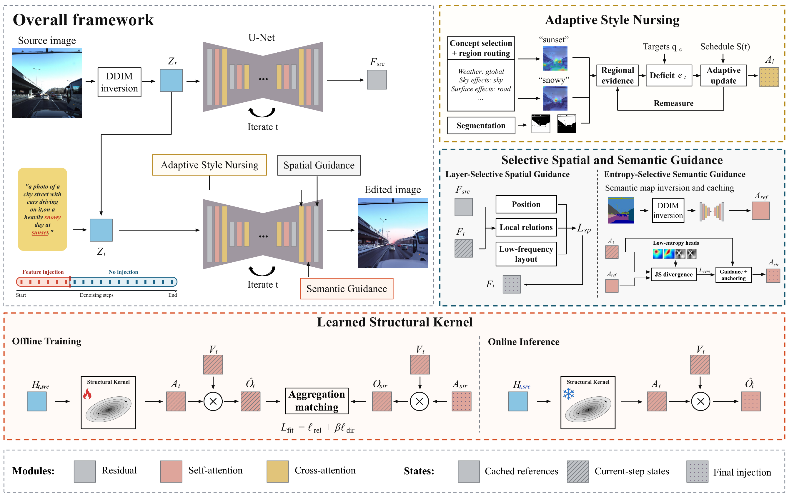
整体流程以 DDIM inversion 获得与源图时间步对齐的潜变量和特征。编辑 U-Net 沿目标提示去噪，并在早期阶段加入概念与结构校正。完整系统包含 Adaptive Style Nursing、Layer-Selective Spatial Guidance、Entropy-Selective Semantic Guidance 和 Learned Structural Kernel。
1. Adaptive Style Nursing：按缺口自适应强化概念
首先把提示词解析为多个风格概念，并按语义角色路由到三类支持区域：
- 全局天气使用整幅图；
- 天空现象和照明变化使用天空区域；
- 路面效果使用道路区域。
天空与道路掩码由冻结的分割模型提供，并缩放到 latent 分辨率。对于每个概念 (c)，方法从选定交叉注意力层和注意力头中汇聚其 token 响应，得到区域证据 (a_c)。分布式概念使用区域均值和覆盖率衡量完成度，闪电等局部概念则使用高分位与峰值响应。
当前证据与概念目标之间形成 deficit (e_c)。只有尚未满足目标的概念才会获得额外更新，步长随 deficit 增大并在高值处饱和；更新被掩码限制在兼容区域内，并设置单步上限与累计预算。每次校正后重新测量注意力，一旦目标达到便停止强化。
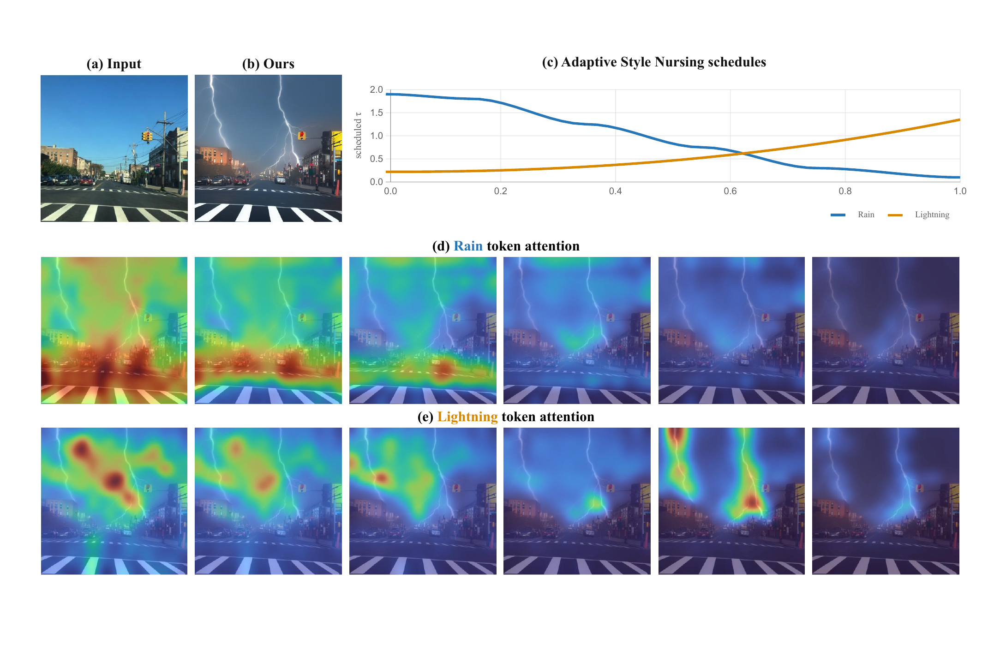
图中“雨 + 闪电”示例体现了不同调度：分布式的雨在早期获得更强目标，局部闪电则在后期逐渐增强。该设计让多个概念按自身状态出现，而不是被同一个全局强度同时推动。
2. LSSG：分层空间结构保护
Layer-Selective Spatial Guidance（LSSG）比较当前编辑轨迹与时间步对齐的源图轨迹。两条分支都使用仅含内容的条件，因此差异主要反映结构变化，而不是风格 token 的直接激活。
方法只选择 Encoder 16×16、Middle 8×8 和 Decoder 16×16 等中间阶段，联合约束：
- 对应位置的特征方向；
- 邻域相似关系；
- 低频粗布局。
空间引导在早期最强，随后逐步释放，让天气纹理、光照和高分辨率细节能够自然形成。
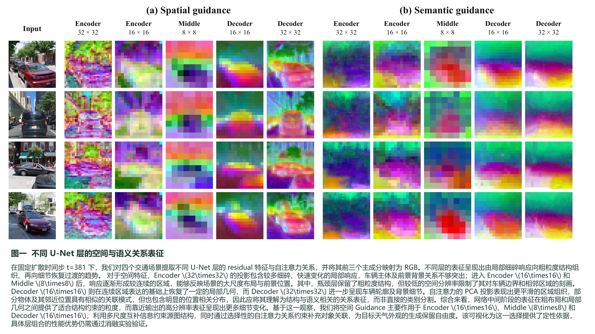
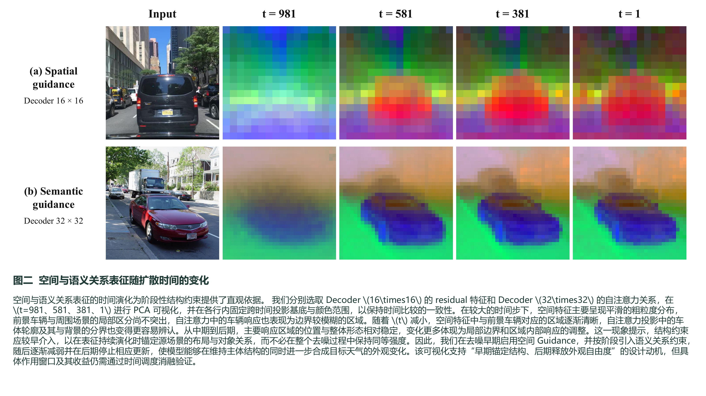
3. ESSG：选择低熵注意力头保持语义关系
Entropy-Selective Semantic Guidance（ESSG）从源图构造分段常数的语义参考图，并对其独立反演。参考轨迹提供自注意力关系 (A_{ref})，但这些注意力并不是类别分割，而是位置依赖的物体内部与物体间关系。
方法计算每个参考注意力头的归一化熵，只保留响应更集中、信息量更高的低熵头，再用 Jensen-Shannon divergence 对齐当前轨迹和参考轨迹的关系分布。空间损失与语义损失的梯度分别按运行幅值归一化并限幅，避免任一约束因数值尺度过大而主导更新。
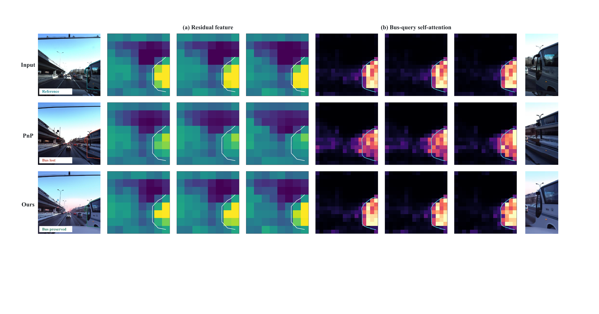
4. Learned Structural Kernel：学习结构聚合并替代参考分支
显式 ESSG 在推理时需要额外的语义参考轨迹。LSK 将语义引导和源图锚定后得到的结构注意力作为离线训练目标，把注意力解释为归一化的高斯核回归：
- 输入包括源图隐藏 token、空间坐标和扩散时间步；
- 每个注意力头学习 query/key 映射、核带宽和位置权重；
- 核权重与当前编辑轨迹的 value 特征相乘，复现原结构注意力的聚合结果；
- 训练同时最小化相对重建误差和方向余弦误差。
在线推理时 LSK 参数冻结。源状态决定结构权重，当前 value 继续携带正在演化的天气外观，因此结构被保留而风格仍可变化。Adaptive Style Nursing 和 LSSG 保持不变，LSK 只替代显式 ESSG 的辅助语义轨迹。
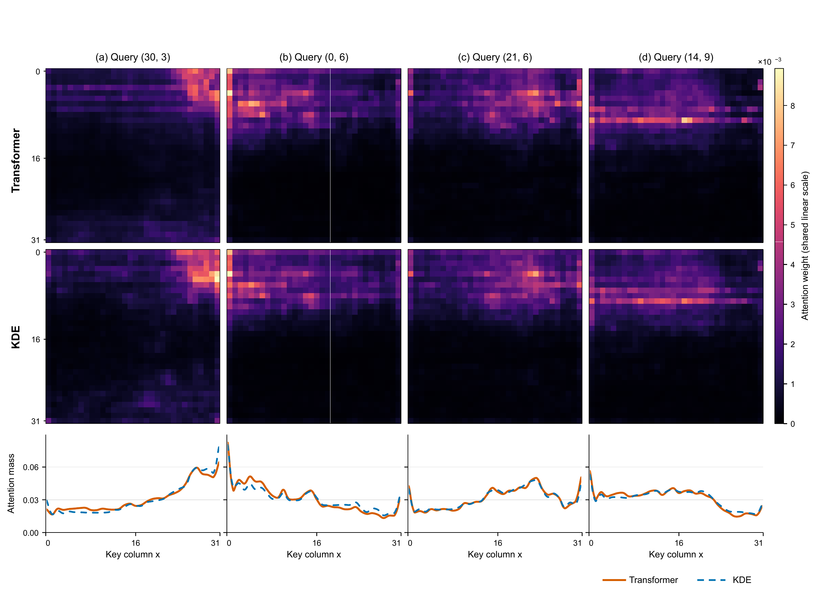
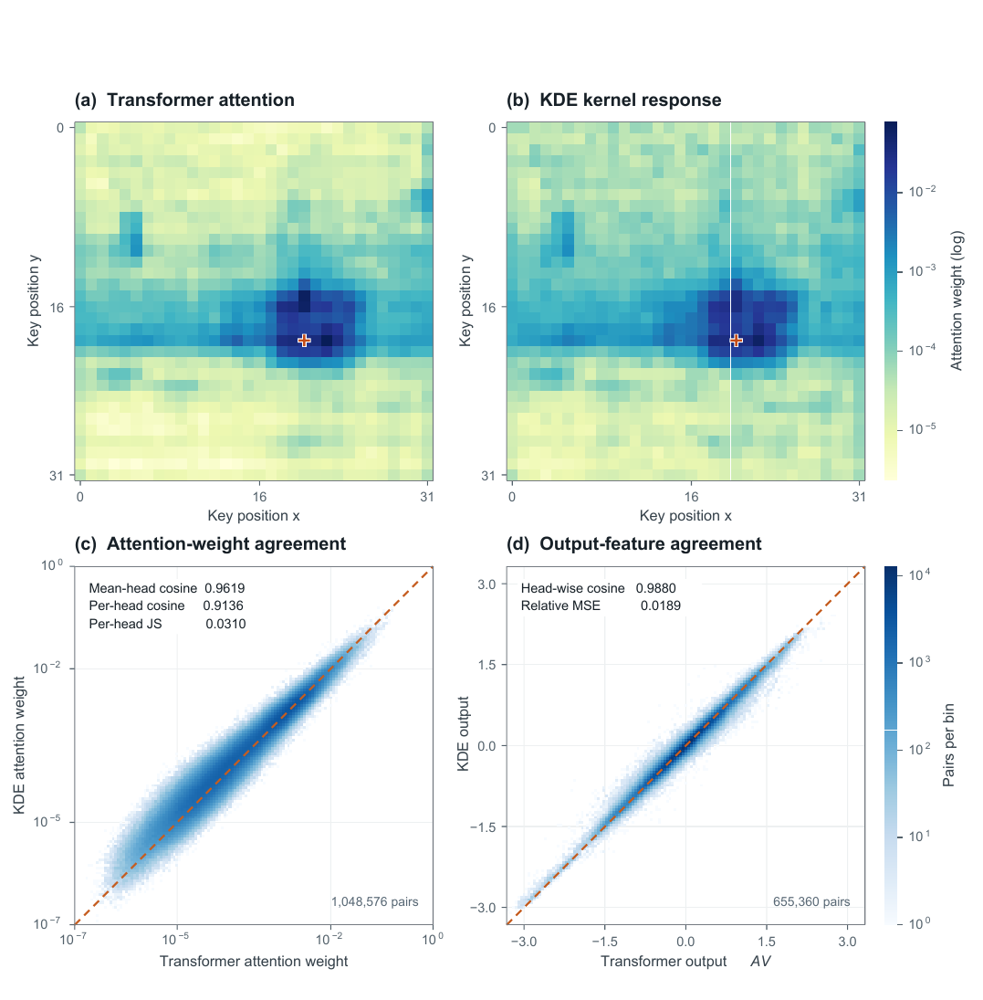
实验
1. 实验设置
- 主数据集： STREET-6K，覆盖复合与单一天气提示。
- 比较方法： SDEdit、P2P + NTI、PnP、Pix2Pix-Zero、MasaCtrl、DiffuseIT、LEDITS++、Free-Prompt-Editing 和原始 Style Nursing。
- 结构与重建指标： DINO、SAM、PSNR、LPIPS、MSE、SSIM。
- 提示与编辑指标： CLIP-I、CLIP-TI、CLIP-Dir，以及 EditScore 的 SC 和 Overall。
- 两种配置： guidance-only core 使用 Adaptive Style Nursing、LSSG 和显式 ESSG；full model 以 LSK 替代显式 ESSG。
- 效率协议： 在 NVIDIA RTX PRO 6000 Blackwell Server Edition 上，以 100 张 512×512 STREET-6K 图像和 50 个扩散步测试；计时包含源图反演、显式配置中的语义参考反演、引导、去噪和图像保存。
2. 复合与单一天气定性比较
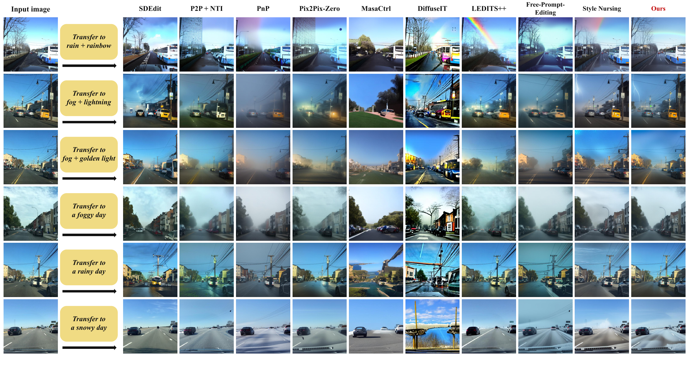
比较覆盖“雨 + 彩虹”“雾 + 闪电”“雾 + 金色光照”三个复合提示，以及雾、雨、雪三个单一天气提示。接近源图的方法往往遗漏某个概念；外观变化更强的方法则容易改变车辆、建筑或道路。Style Nursing++ 在这些示例中同时呈现目标天气并保留主要布局与物体。
3. STREET-6K 主定量结果
表 1：主要方法的代表性指标
| 方法 | DINO ↑ | SAM ↑ | PSNR ↑ | LPIPS ↓ | CLIP-Dir ↑ | EditScore SC ↑ | Overall ↑ |
|---|---|---|---|---|---|---|---|
| SDEdit | 0.6436 | 0.6752 | 19.79 | 0.2958 | 0.1285 | 5.882 | 6.189 |
| P2P + NTI | 0.7573 | 0.7964 | 19.74 | 0.2515 | 0.1906 | 6.706 | 6.796 |
| PnP | 0.7150 | 0.7681 | 18.18 | 0.3081 | 0.1971 | 7.392 | 7.730 |
| Pix2Pix-Zero | 0.7434 | 0.7878 | 19.78 | 0.2642 | 0.1476 | 5.912 | 5.754 |
| DiffuseIT | 0.5663 | 0.5929 | 13.80 | 0.4854 | 0.1714 | 5.064 | 4.308 |
| LEDITS++ | 0.7420 | 0.7611 | 19.64 | 0.2377 | 0.2002 | 6.956 | 6.972 |
| Free-Prompt-Editing | 0.6871 | 0.7257 | 11.36 | 0.3902 | 0.1870 | 6.302 | 7.166 |
| Style Nursing | 0.7770 | 0.8091 | 19.49 | 0.2389 | 0.1967 | 7.510 | 7.144 |
| Style Nursing++ core | 0.7580 | 0.8023 | 20.04 | 0.2407 | 0.1965 | 7.878 | 7.368 |
| Style Nursing++ full | 0.7600 | 0.8057 | 20.16 | 0.2381 | 0.2005 | 7.904 | 7.396 |
没有单一方法在所有目标上占优。原始 Style Nursing 的 DINO、SAM 和 SSIM 最高，LEDITS++ 的 LPIPS 最低，PnP 的 EditScore Overall 最高；Style Nursing++ full 则取得最佳 PSNR、MSE、CLIP-Dir 和 EditScore SC，并在 DINO、SAM、LPIPS 与 Overall 上保持竞争力。这反映出论文关注的是提示完成度与结构保持的综合平衡，而不是单一指标最大化。
4. 组件消融
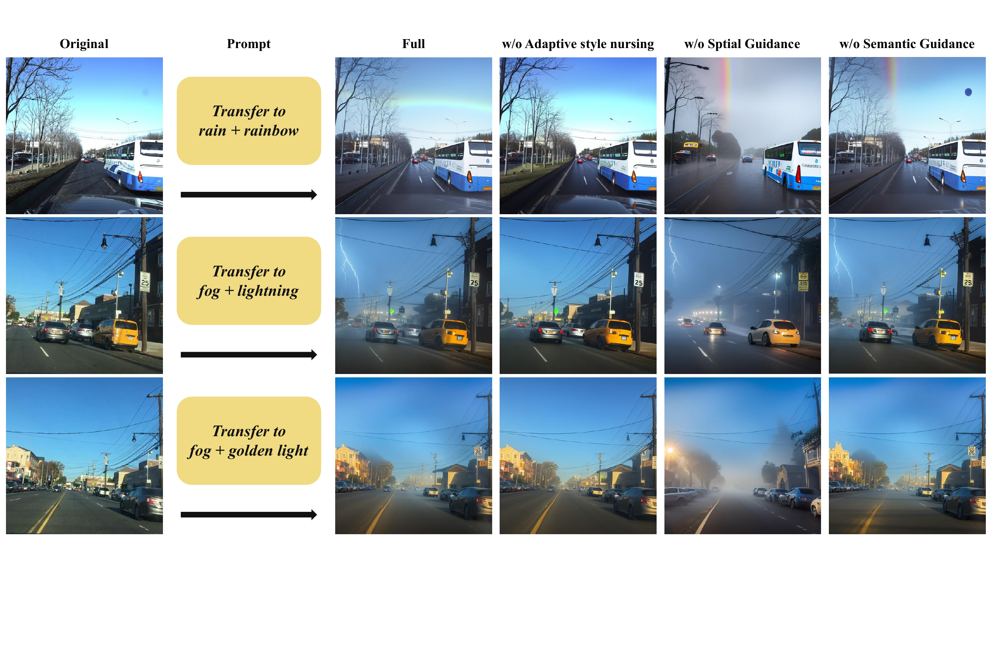
- 移除 Adaptive Style Nursing 后，系统更接近源图重建，DINO、SAM、PSNR 和 SSIM 上升，但 CLIP-TI、CLIP-Dir 和两项 EditScore 显著下降，说明复合提示表达变弱。
- 移除 LSSG 后，结构与重建指标整体下降，表明中间层空间锚定对道路、车辆和布局稳定至关重要。
- 移除 ESSG 后，SAM、LPIPS、CLIP-I、CLIP-Dir 和两项 EditScore 变差，说明低熵关系头为物体内部和物体间结构提供了额外约束。
- 用 LSK 替代显式 ESSG 后，11 项报告指标全部优于 guidance-only core：DINO/SAM 从 0.7580/0.8023 提升到 0.7600/0.8057，PSNR 从 20.04 dB 提升到 20.16 dB，LPIPS 从 0.2407 降至 0.2381，MSE 从 111.52 降至 108.81。
5. LSK 拟合与注意力一致性
在近似参数规模和相同训练设置下，高斯 LSK 在六项拟合指标上优于 MLP dot-product 与 convolutional dot-product：相对 MSE 分别降低 20.5% 和 51.3%。高斯核与拉普拉斯核的差异只有约 1.4%，因此论文只把结果解释为“学习核结构有效”，而不宣称高斯族绝对优于所有其他核。
在三个示例的全部 query 位置上，LSK 与原生自注意力的平均注意力余弦相似度为 0.9295–0.9787；使用相同 value 矩阵时，聚合输出余弦相似度达到 0.9737–0.9932。代表性解码层的平均头注意力余弦相似度为 0.9619，聚合输出余弦相似度为 0.9880，相对 MSE 为 0.0189。
6. 推理效率
表 2：STREET-6K 单图效率
| 配置 | 平均延迟 | 计算量 | 能耗 | P50 延迟 | P95 延迟 |
|---|---|---|---|---|---|
| Style Nursing++ core（显式 ESSG） | 27.61 s | 183.75 TFLOP | 1.92 Wh | 27.55 s | 28.97 s |
| Style Nursing++ full（LSK） | 19.65 s | 145.37 TFLOP | 1.49 Wh | 19.53 s | 21.14 s |
相对于显式 ESSG，LSK 将平均延迟降低 28.8%，计算量降低 20.9%，能耗降低 22.4%。它既取消了额外语义参考分支，也在全部 11 项主指标上优于 core 配置。
7. 跨域迁移
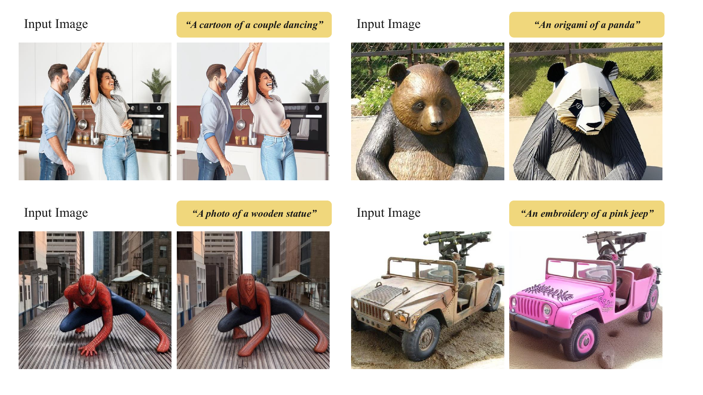
论文还把交通场景上训练的 LSK 用于人物、折纸、木雕和刺绣材质编辑。结果保留了主要姿态、轮廓与空间排列，说明学习到的结构聚合具有一定跨域迁移能力；但该部分只有定性示例，尚不能替代更广泛的定量泛化评估。
局限
- 当前区域路由只覆盖交通场景中较可靠的整图、天空和道路支持区域。更局部的概念仍需要额外掩码或学习式路由器。
- LSK 针对特定扩散骨干、选定层和去噪阶段拟合。更换差异较大的骨干时，需要重新采集结构轨迹并训练核模型。
- 效率实验只覆盖一种 GPU 和 512×512 分辨率，尚需在更多硬件、分辨率和骨干上验证可移植性。
- 跨域实验目前仅为定性观察，不能据此声称在所有对象与风格上普遍泛化。
- 方法仍依赖冻结分割模型提供天空与道路区域；分割错误可能导致概念强化区域不准确。
项目贡献总结
- 把复合天气编辑建模为概念实现与结构保护的联合问题。 Style Nursing++ 明确区分 Style Neglection 和 Style Over-expression，并通过独立概念反馈避免用单一全局强度处理所有天气效果。
- 提出区域自适应的概念强化机制。 Adaptive Style Nursing 将概念路由到整图、天空或道路，依据区域交叉注意力缺口动态调节更新，并在目标满足后停止校正。
- 设计互补的空间与语义结构约束。 LSSG 在结构信息最稳定的中间层锚定位置、邻域和低频布局；ESSG 从低熵自注意力头中提取物体关系并进行分布对齐。
- 以 Learned Structural Kernel 提升效率。 LSK 学习显式语义引导产生的结构聚合，在取消辅助参考轨迹后将平均延迟、计算量和能耗分别降低 28.8%、20.9% 和 22.4%，同时改善 guidance-only core 的全部 11 项指标。
完整论文
Zero-Shot Compound Weather Transfer with Adaptive Style Nursing and Learned Structural Kernel
Chi Zhang, Yuchen Li, Le Wang, Meng Yuan, Yuanqi Su, Li Li
为避免部分浏览器无法加载内嵌 PDF，下面同时提供完整 12 页的逐页阅读版本。原始 PDF 仍可通过上方按钮打开或下载。
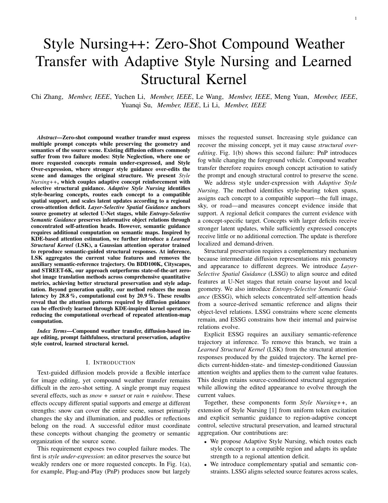
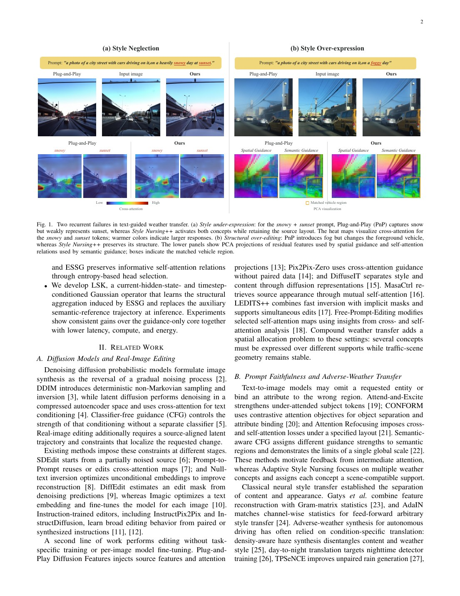
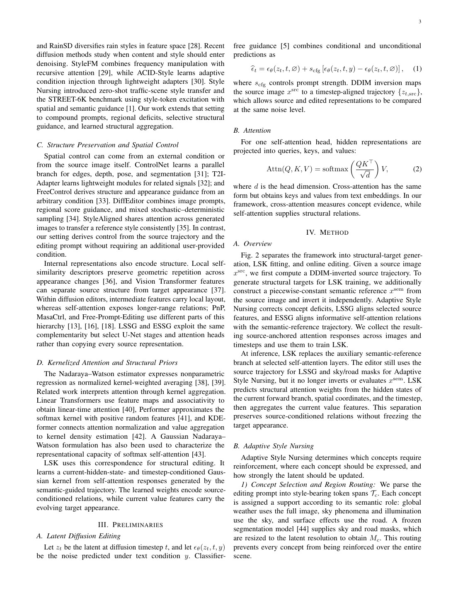
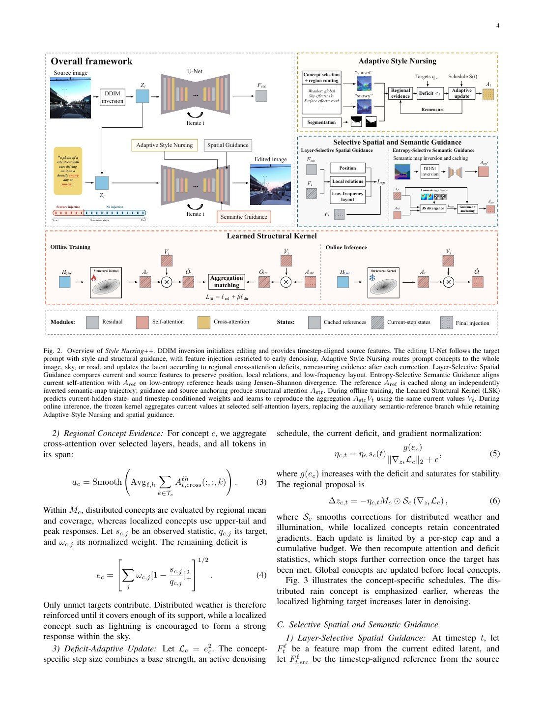
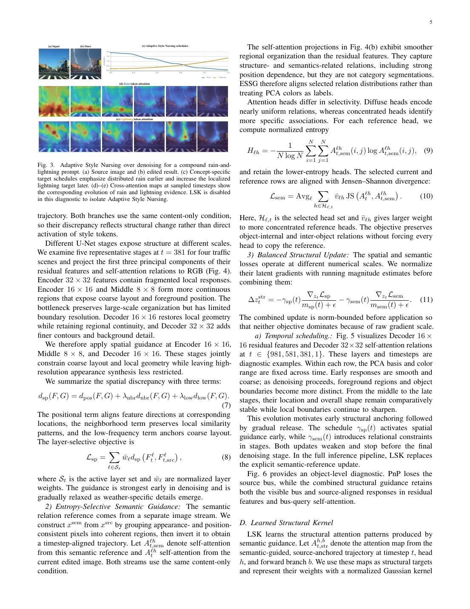
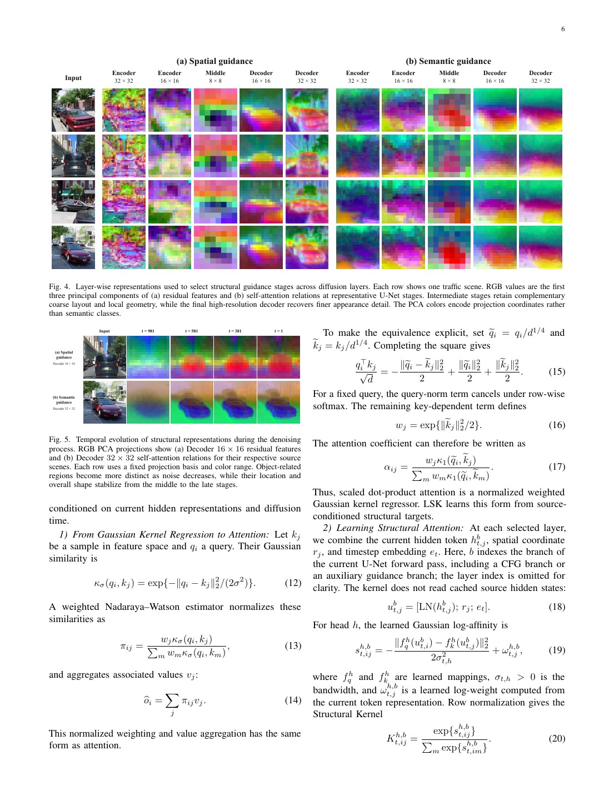
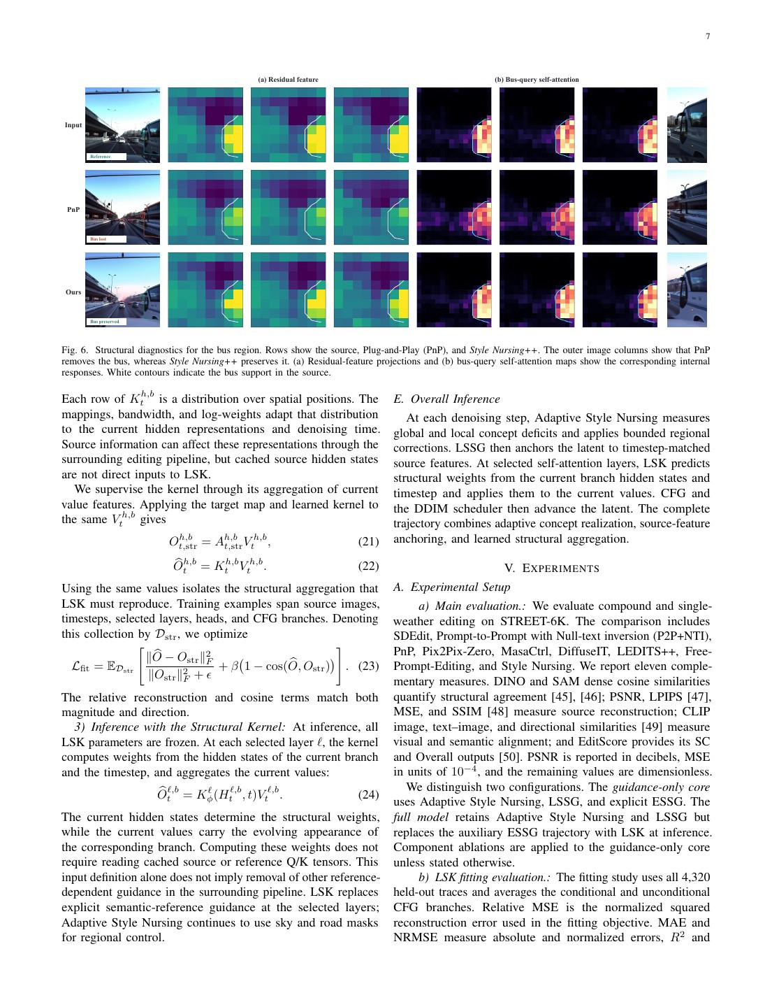
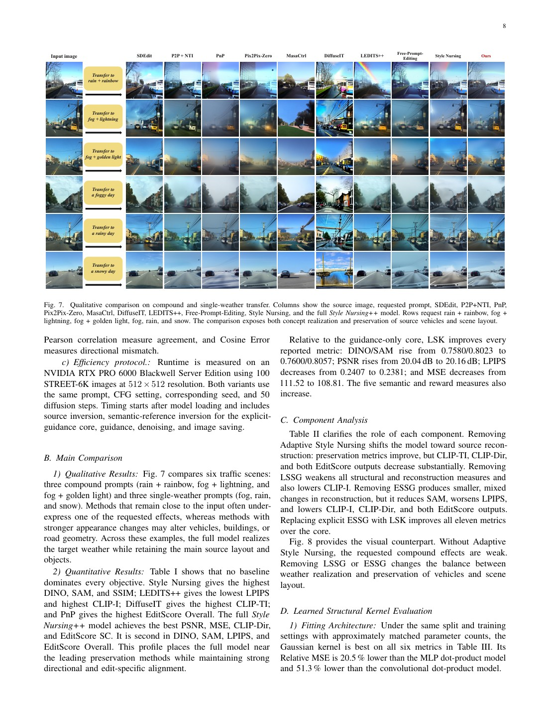
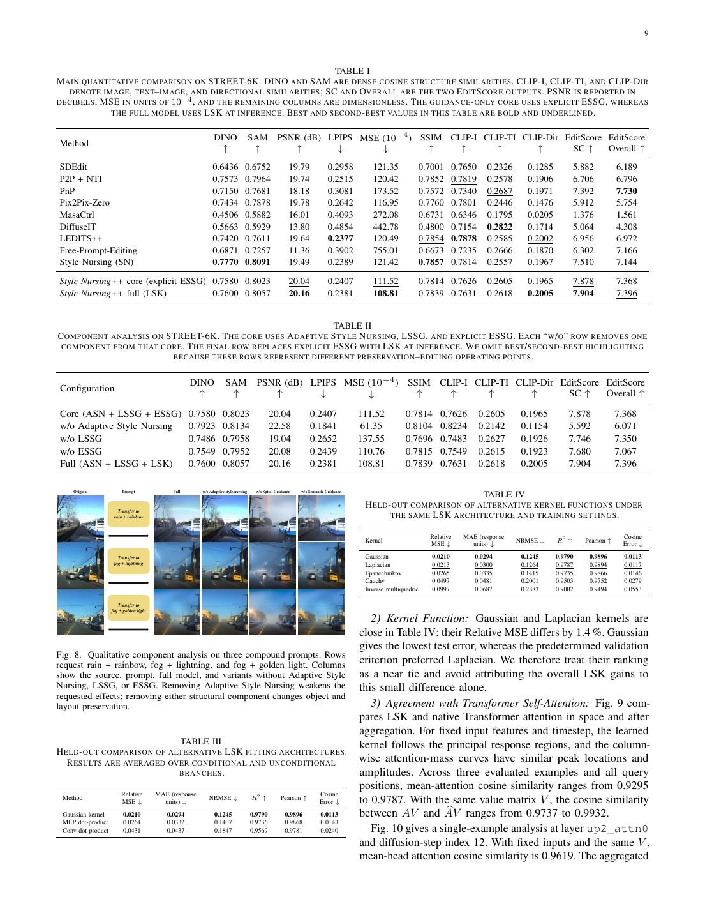
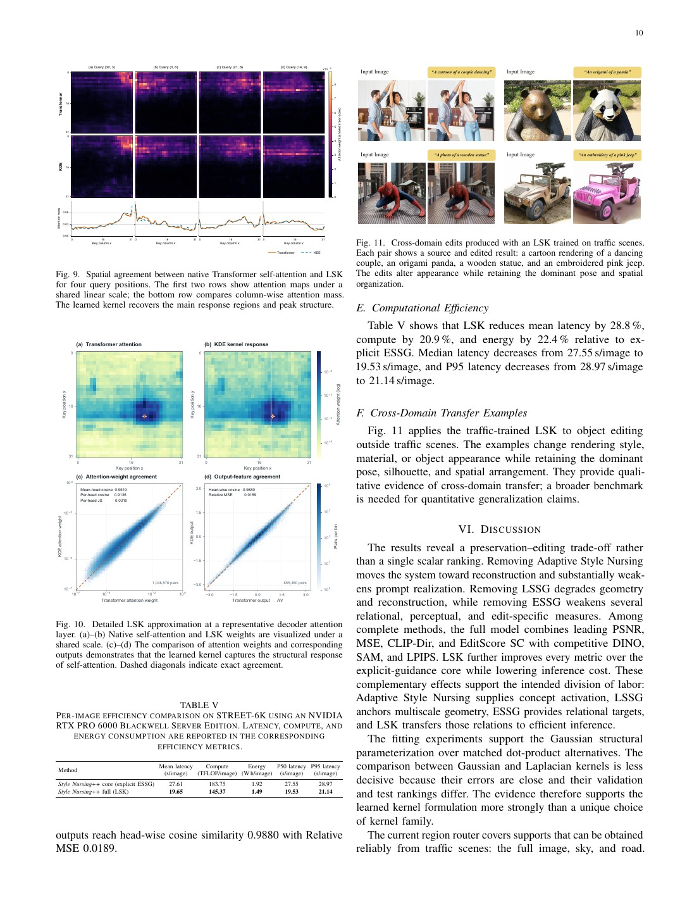
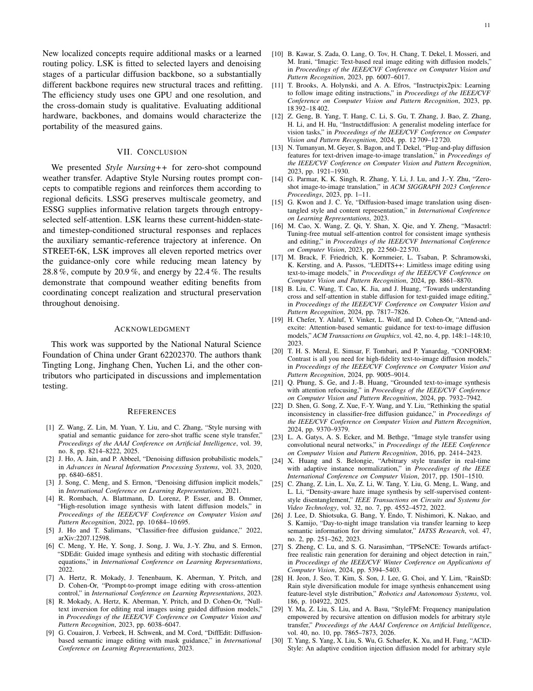
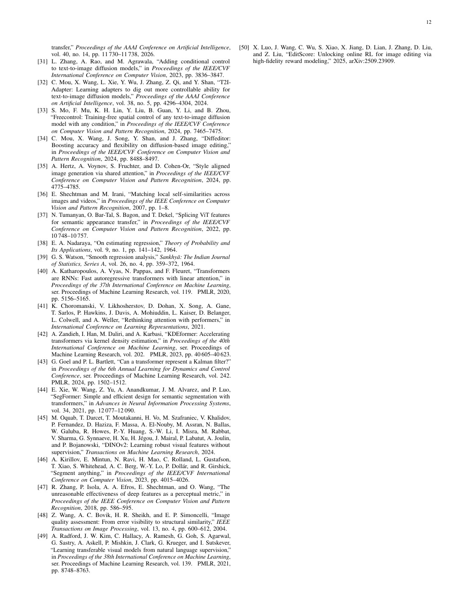